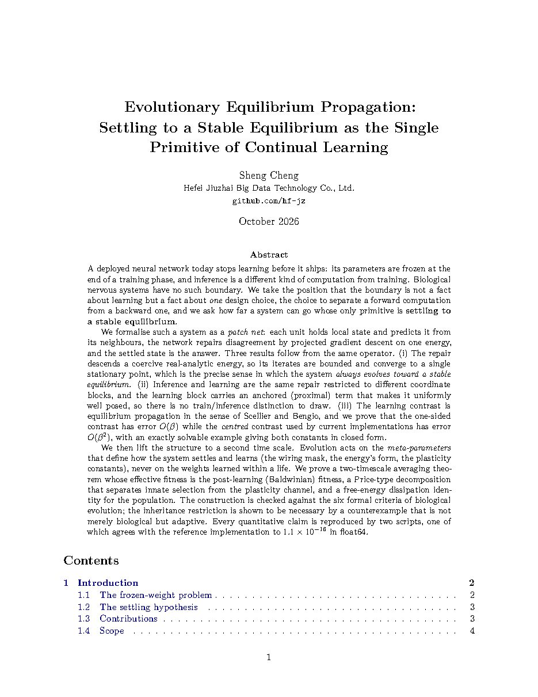
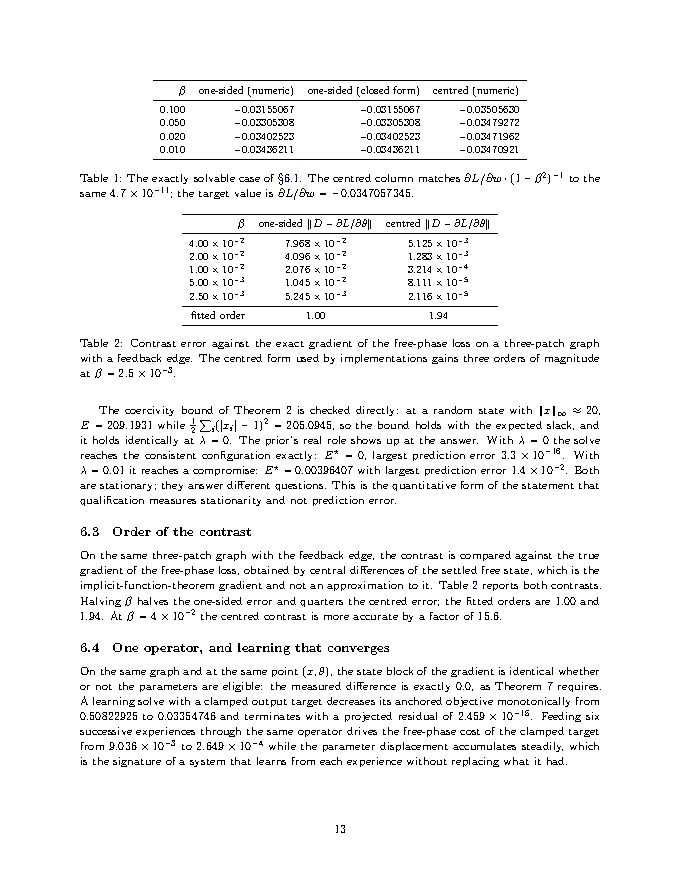

Evolutionary equilibrium propagation
One operator settles the network, answers the query and changes the connections
A patch net always repairs toward a stable equilibrium under one energy. The same repair is forward pass, learning rule and error backpropagation at once.

Theorem 3
Every bounded repair trajectory reaches a single stationary point
Π( z − ∇F(z) ) = z , with ‖z(j) − z★‖ ≤ C (1+j)−(1−ϑ)/(2ϑ−1)
projected stationarity, and the rate from the Łojasiewicz exponent ϑ
The repair energy of a patch net is coercive, because every patch predicts its own state and every prediction is a bounded function of that state. Sublevel sets are compact, so trajectories are bounded. The energy is real analytic, so the Łojasiewicz inequality holds at every point, and a line-search descent method on such a function has iterates that converge to one point rather than wandering over a stationary set.
The exponent is in [1/2, 1). At 1/2 convergence is exponential. This is the precise sense in which the system always evolves toward a stable equilibrium, and it is what licenses reading the settled state as the answer to the current query.
Convergence is to a stationary point, not to the global minimum. A nonconvex energy has several, with different basins, and different sensory boundary data settle differently. The system is a family of equilibria indexed by inputs, clamps and parameters.
Measured on a three-patch graph with a feedback edge: the energy falls at every accepted sweep over 2001 sweeps, from 0.22303138 to 0.00396407, and the projected residual at the terminal state is 4.297e-13.
There is no training phase to draw a boundary around
A query freezes the parameters and repairs the states. A learning solve clamps the supplied targets, makes the parameters eligible, and adds one anchored quadratic term. Same energy, same operator, same qualification test. What changes is which coordinates the operator is allowed to move.
The anchored objective
- QQuery solve
- Repairs free states on the patch energy, with parameters frozen. The settled state is the answer.
- LLearning solve
- Clamps targets, makes weights and biases eligible, and adds (rho/2) times the squared distance to the parameters held before the experience.
- AThe anchor has a proved role
- The anchored objective has parameter Hessian at least (rho minus the local curvature), so the parameter block is strongly convex once rho exceeds that curvature. The update contracts.
- CThe contrast
- The learning rule compares the two settled phases at each synapse. That is equilibrium propagation, and it is local: two activities plus one broadcast scalar.
What the operator does in practice
The state block of the gradient is identical whether or not the parameters are eligible. The measured difference at a fixed point (x, theta) is exactly 0.0, as Theorem 5 requires, so the two solves are literally one map with two coordinate index sets.
A learning solve with a clamped target decreases its anchored objective monotonically from 0.50822925 to 0.03354746 with a terminal projected residual of 2.459e-15. Feeding six successive experiences through the same operator drives the free-phase cost of that target from 9.036e-3 to 2.649e-4, while the parameter displacement accumulates steadily.
Nothing is reset between experiences, and no separate answer head exists. The goal enters through exactly one door, the nudge of the second phase.
What is proved, and under what condition it would fail
Each row states the result and the measurement that would refute it. The paper carries the proofs in full.
Lyapunov descent proved
Every accepted step of the projected repair decreases the energy, with strict decrease away from a stationary point, so the sum of squared displacements is finite.
Coercivity, with or without the activity prior proved
F is at least one half of the sum of (|x| minus 1) squared, because each prediction is a tanh value. Boundedness follows from the architecture, not from the prior.
Convergence to one point proved
Real analyticity gives the Łojasiewicz inequality; a line-search descent method on an analytic cost function with bounded iterates converges to a single stationary point, at a polynomial or exponential rate.
One operator, two coordinate blocks proved
The anchor term has no state derivative, so the state gradient is unchanged by making parameters eligible. Eligibility enters only through projection and qualification.
Equilibrium propagation, fundamental lemma proved here and in the source
The one-sided contrast between the nudged and free phases equals the gradient of the free-phase loss up to O(beta), by the implicit function theorem on the equilibrium branch.
The centred contrast is second order proved
Contrasting a plus beta and a minus beta nudge from the same free state cancels the first-order term. The error is O(beta squared) rather than O(beta), at the cost of one extra settling phase.
Averaging to the Baldwinian fitness proved under stated hypotheses
Evolution acts on meta-parameters. As the lifetime-to-generation ratio vanishes, the population flows to a replicator-mutator equation whose fitness is the post-learning fitness, not the innate one.
Biological compliance, with a necessary restriction proved
Blind variation, post hoc causal selection, an anchor weight above curvature, non-negative dissipation, scale separation and redundancy are satisfied by construction. Inheriting only the plasticity, and not the learned weights, is necessary on broad or rapidly changing task distributions.
An exactly solvable case, and agreement with the implementation
Take one patch reading one sensory value with the activity prior switched off and a squared cost. Both contrasts are exact in closed form.
Done = (∂L/∂w) · (1+β)−1 Dctr = (∂L/∂w) · (1−β2)−1
the centred error is the square of the one-sided error to leading order
| beta | one-sided error | centred error |
|---|---|---|
| 4.00e-2 | 7.968e-2 | 5.125e-3 |
| 2.00e-2 | 4.096e-2 | 1.283e-3 |
| 1.00e-2 | 2.076e-2 | 3.214e-4 |
| 5.00e-3 | 1.045e-2 | 8.111e-5 |
| 2.50e-3 | 5.245e-3 | 2.116e-5 |
| fitted order | 1.00 | 1.94 |
The closed-form case is checked numerically at four values of beta and agrees to 4.7e-11. The centred column in the table above matches the analytic expression to the same tolerance.
The exact gradient used as the reference is obtained by central differences of the settled free state, which is the implicit-function-theorem gradient and not an approximation to it.
The paper's own implementation of the patch law is compared against the reference library at version 0.80.0 on the same graph. The largest absolute difference across the energy, the prediction, the error, and the state, weight and bias gradients is 1.1e-16, which is float64 rounding. Terminal states agree to 1.018e-12.
A settlement through the library's public composition interface qualifies with a stationarity residual of 2.8e-7 after seven accepted sweeps. The mathematics describes the implementation that exists.
The second time scale
Evolution changes the meta-parameters between lives. A life changes the weights. The object that selection sees is the fitness after a life of learning.
What is inherited
The wiring mask, the form of the energy, and the plasticity constants. Not the weights learned within a life. This is the Weismann restriction written as a design constraint rather than borrowed as a metaphor.
In the notation of the paper, the restricted system transmits only the capacity to learn, so its population keeps the ability to specialise within each life.
What the measurements show
With a scalar plasticity meta-parameter, the post-learning fitness has an interior maximum at 0.3913, which is the statement that learning is retained. A value of zero would mean the lineage switched plasticity off.
The population free energy falls monotonically from 0.379150 to 0.109856 and approaches the Gibbs form to a total-variation distance of 0.0040.
The per-generation change of mean fitness separates into innate selection, plasticity selection, Baldwin accommodation and mutation. At a stationary population both covariance terms vanish.
The population flow is a Wasserstein gradient flow, so it dissipates one free energy monotonically and settles at the Gibbs form. The four layers carry a nested Lyapunov family, one per time scale.
The dissipation identity is structural, not a claim about joules. Quasi-static analog inference can in principle be reversible, while training carries a floor linear in dataset size and parameter count. The advantage reported in thermodynamic computing is at inference, not in training.
Inside the document

Four ways to refute this
A construction that cannot fail is not a contribution. These are stated so that they can.
Any patch net whose second phase is an equilibrium branch of a twice-differentiable family should show a centred error scaling as beta squared. A measured first-order centred error refutes the theorem.
Setting the anchor weight above the local curvature of the data term should remove the oscillatory or divergent parameter trajectories seen at small anchor weights, and the improvement should track the contraction factor.
Doubling the lifetime-to-generation ratio should halve the deviation between an individual-based population and the averaged flow. An exponent away from one refutes the hypotheses of the averaging theorem.
On a broad or rapidly changing task distribution the population inheriting only plasticity should reach strictly higher stationary fitness, and on a narrow stable distribution the ordering should reverse.
Claimed, and not claimed
Claimed
- Settling on the patch energy converges to a single stationary point, with a rate given by the Łojasiewicz exponent.
- Inference and learning are one operator restricted to different coordinate blocks.
- The learning contrast is equilibrium propagation, and its centred form is second order.
- The evolutionary layer satisfies six formal criteria of biological evolution, and the inheritance restriction is necessary on stated distributions.
- The implementation matches the mathematics to float64 rounding.
Not claimed
- That settling yields intelligence, or that a patch net matches a transformer at any task.
- That the architecture scales. Every result here is on graphs of a few patches.
- That uniform hyperbolicity of the lifetime flow holds as meta-parameters vary. That is the weakest link and it is stated as a hypothesis.
- That the evolutionary layer has been validated on hardware. The evidence is numerical.
- That this saves energy while learning.
Reproduce every number on this page
Two scripts. The first is numpy only and asserts each claim, exiting non-zero if a claim fails. The second imports the reference library and performs the cross-check.
python3 src/verify_eep.py # Parts A-F: analytic gradients against finite differences (1.5e-10) # settling monotonicity, convergence, coercivity # order of the one-sided and centred contrasts # one operator across two coordinate blocks # the evolutionary layer # the closed-form case PYTHONPATH=../cadence/src python3.13 src/cadence_crosscheck.py # energy, prediction, error and all three gradients against cadence-net 0.80.0 # largest absolute difference 1.110e-16
Run logs are archived beside the scripts in evidence/. The paper source is eep.tex and builds with xelatex.
Cite
@article{cheng2026eep,
title = {Evolutionary Equilibrium Propagation: Settling to a Stable
Equilibrium as the Single Primitive of Continual Learning},
author = {Cheng, Sheng},
year = {2026},
month = {October},
note = {Hefei Jiuzhai Big Data Technology Co., Ltd.},
url = {https://hf-jz.github.io/eep/}
}
Selected references
- B. Scellier and Y. Bengio. Equilibrium propagation: bridging the gap between energy-based models and backpropagation. Frontiers in Computational Neuroscience 11:24, 2017.
- B. Scellier and Y. Bengio. Equivalence of equilibrium propagation and recurrent backpropagation. 2019.
- M. Ernoult, J. Grollier, D. Querlioz, Y. Bengio and B. Scellier. Updates of equilibrium prop match gradients of backprop through time in an RNN with static input. NeurIPS, 2019.
- A. Laborieux and F. Zenke. Holomorphic equilibrium propagation computes exact gradients through finite size oscillations. NeurIPS, 2022.
- P.-A. Absil, R. Mahony and B. Andrews. Convergence of the iterates of descent methods for analytic cost functions. SIAM Journal on Optimization 16(2):531-547, 2006.
- J. Bolte, A. Daniilidis, A. Lewis and M. Shiota. Clarke subgradients of stratifiable functions. SIAM Journal on Optimization 18(2):556-572, 2007.
- W. Gerstner, M. Lehmann, V. Liakoni, D. Corneil and J. Brea. Eligibility traces and plasticity on behavioral time scales. Frontiers in Neural Circuits 12:53, 2018.
- C. Fernando, J. Syrota and J. E. Pompeu. Meta-learning by the Baldwin effect. GECCO Companion, 2018.
- B. Mueller. Cadence: one continuing equilibrium brain, version 0.80.0, 2026.